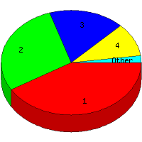

Week of 9/20/2009 to 9/26/2009: Top 7 of 7 File Types (Extensions)
Sorted by Access Count
Individual file types as determined by file extensions. All URLs that do not contain an extension are counted as directories.

Rank
Type
Accesses
%
Bytes
%
1
jpg
61
41.50
1,996,515
82.62
2
htm
42
28.57
139,102
5.76
3
Directory (folder)
26
17.69
60,375
2.50
4
gif
15
10.20
218,896
9.06
5
cgi
1
0.68
360
0.01
6
pl
1
0.68
879
0.04
7
css
1
0.68
260
0.01